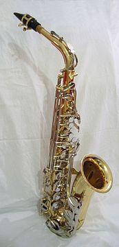
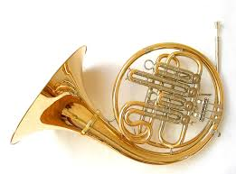

Духовые музыкальные инструменты
Духовые музыкальные инструменты — музыкальные инструменты,
источником звука в которых является колеблющийся столб воздуха, находящийся
в трубке инструмента. Согласно классификации Хорнбостеля — Закса духовые
инструменты относятся к группе аэрофонов.
Особой разновидностью духового инструмента является орган — очень
большой клавишно-педальный инструмент с лабиальными и язычковыми трубками,
воздух в которые нагнетается мехами.
Общее описание
Регистр духовых инструментов определяется их размерами:
чем больше объём заключённого в инструменте столба воздуха,
тем с меньшей частотой он колеблется и, следовательно, тем ниже издаваемый
инструментом звук.
- Изменение частоты колебаний воздушного столба в инструменте достигается двумя
способами:
- Классификация по первичному источнику колебаний
- Лабиальные
У лабиальных инструментов (лат. labium — губа) источником колебаний является струя воздуха, рассекающаяся об острый край стенки инструмента (лабиум). К ним относятся все виды флейт. - Язычковые
В язычковых источником вибрации является колеблющийся язычок, находящийся в мундштуке инструмента. Примеры: гобой, кларнет, саксофон, фагот.  - Мундштучные (амбушюрные)
Здесь источником колебаний являются губы музыканта. К мундштучным относятся все медные духовые. Примеры: валторна, горн, тромбон, труба, туба. 

- Классификация по материалам изготовления
- Деревянные
Деревянными называются духовые инструменты, принцип игры на которых основывается на укорочении звучащего столба воздуха путём открывания отверстий, расположенных на корпусе инструмента на определённом расстоянии друг от друга.
На ранних этапах своего развития эти инструменты изготавливались исключительно из дерева, откуда исторически и получили своё наименование. Некоторые современные инструменты такого типа (например, оркестровая флейта) почти не изготовляются из дерева, для изготовления других дерево применяется наряду с другими материалами. - Медные
Медными называются духовые инструменты, принцип игры на которых заключается в получении гармонических созвуков путём изменения силы вдуваемого потока воздуха или положения губ. Без применения механизма вентилей такие инструменты способны издавать лишь небольшое количество звуков натурального звукоряда. С изобретением этого механизма (1830-е годы) медным инструментам стал доступен хроматический звукоряд, и они стали полноценными инструментами классической музыки. На тромбоне для получения хроматических звуков применяется особая выдвижная трубка — кулиса.